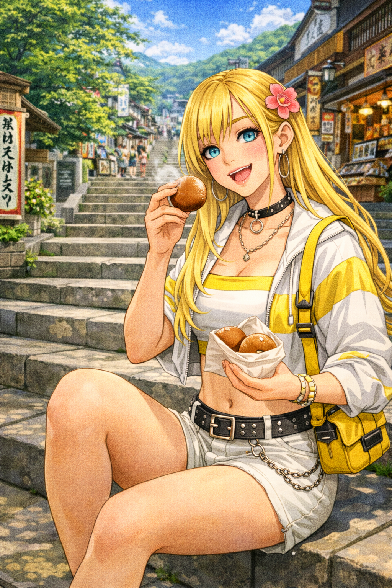
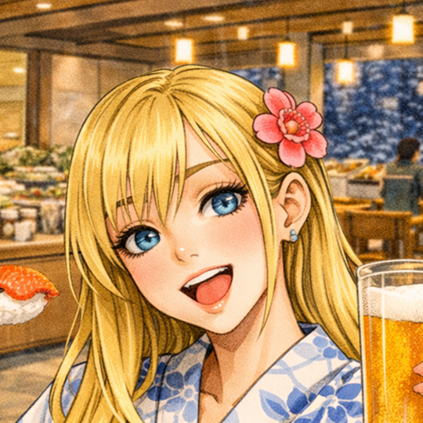
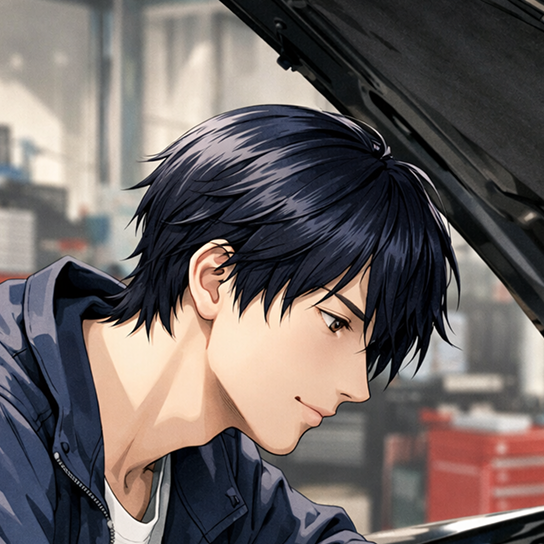
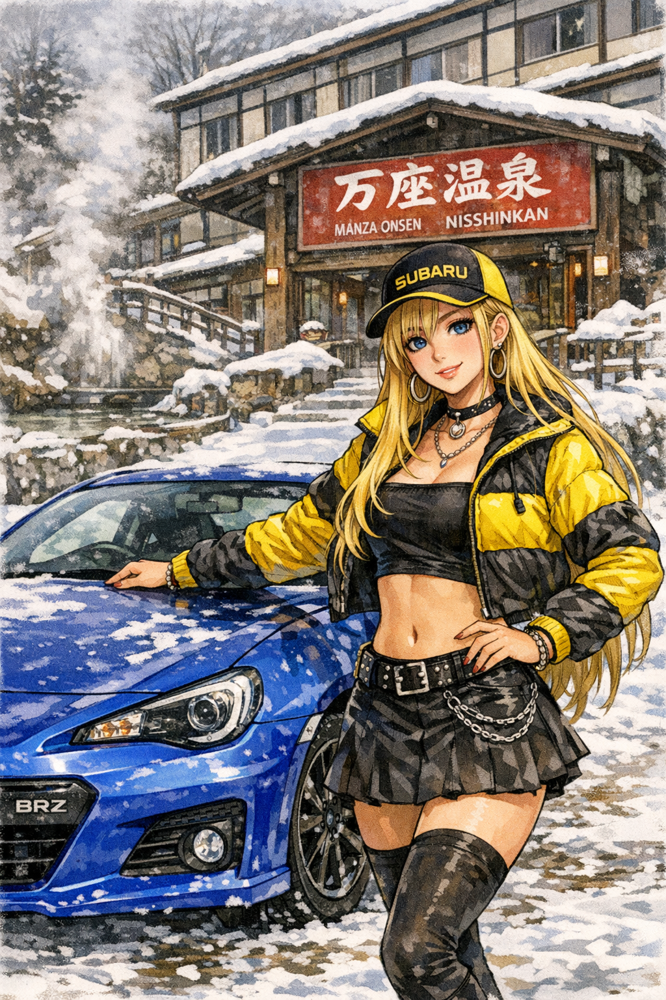
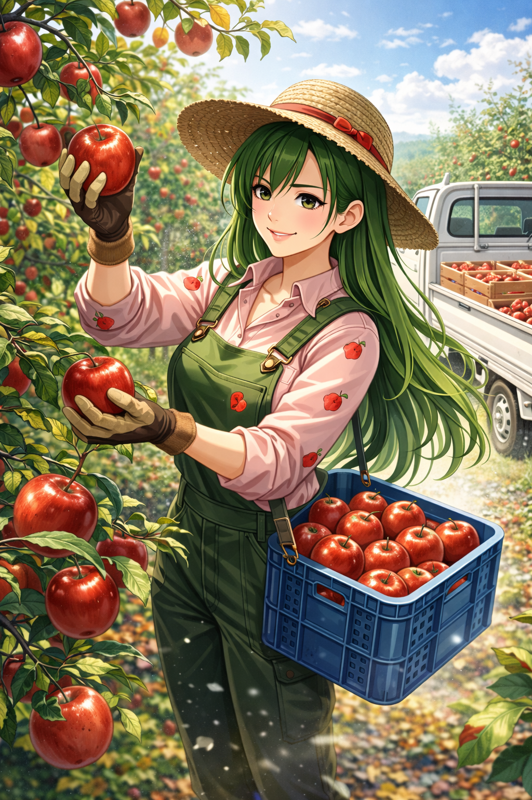
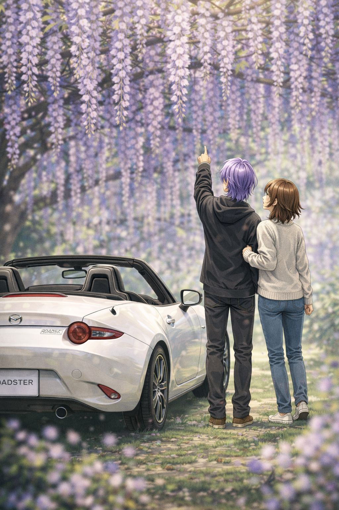
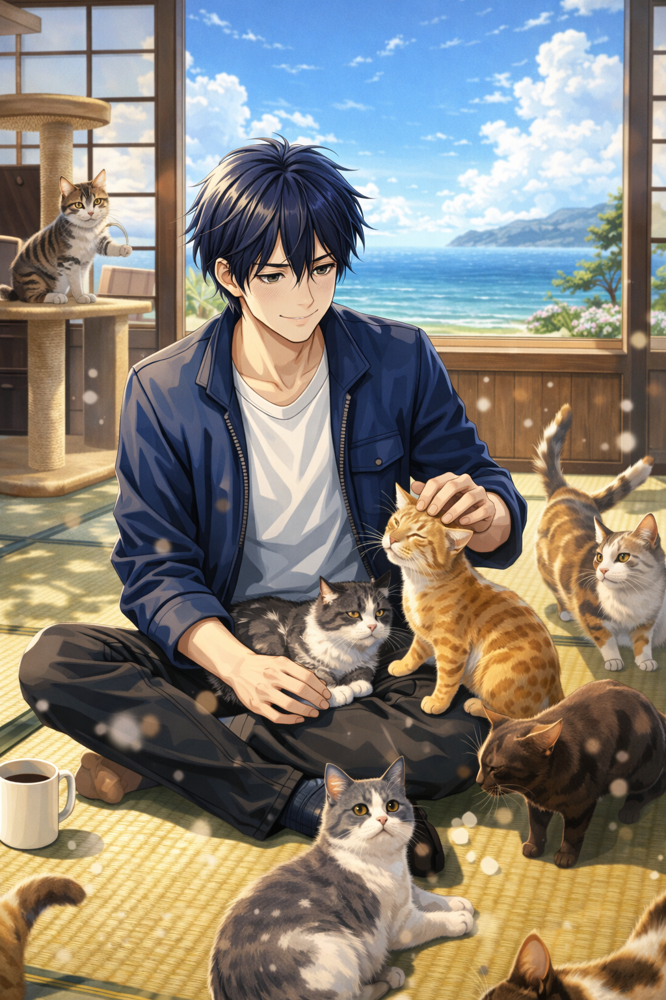

検索
あの日心動いた道を、
次の主役へ。
「あの道、最高だったのに場所がわからない」をなくしたい。ルートや休憩所までピンポイントで呼び出す。こだわり抜いた検索機能が、あなたを再び、一生ものの感動へと連れ出します。
詳細
まだ知らない「絶景」と、
誰かの「最高の一台」が待っている。
条件に合った投稿を一覧表示しています。
気になる写真をクリックして、詳細をのぞいてみましょう。
写真は景色を、ルートは感情を呼び覚ます。
思い出はもっと鮮やかになる。
あなたが歩んだ軌跡こそが、
世界にひとつの宝物です。
検索
「あの道、最高だったのに場所がわからない」をなくしたい。ルートや休憩所までピンポイントで呼び出す。こだわり抜いた検索機能が、あなたを再び、一生ものの感動へと連れ出します。
詳細記録
地図に並ぶ写真は、あなたと大切な人が笑い合った証。軌跡でつなぐ共有体験が、あの日の感動をより鮮明に、よりリアルに。思い出を分かち合うたび、宝物がまたひとつ増えていく。
始める共有
楽しかった時間を、みんなの宝物に。それぞれの「嬉しい・楽しい」を一つの地図に集めて、最高のレポを創りましょう。分かち合う幸せが、あなたの世界を、もっと鮮やかに変えていく。
シェア
「走るのがもっと好きになった」
その声が、私たちの力です。
幸せな記憶を宝物に変えたドライバーの輪が、今、全国の道へと広がっています。
友達と榛名までドライブした時の写真をシェアしたら、みんなの反応が良くてなっから嬉しい！お気に入りのスポットを共有できるから、次の週末がもっと楽しみになるね。BRZの運転席に座っているみたいな臨場感で思い出を語れるのが最高。みんなも絶対使ってみて！

自分から誘うのは苦手ですが、アプリを通じて友人のドライブ記録を眺めるのが日課です。僕が整備した車が元気に走っている姿を見ると、裏方として救われる気持ちになります。言葉にしなくても『また行こう』と伝わる、僕にとって大切な居場所です。

★★★★★5.0
一人で走るのもいいけど、やっぱり美味しいバラ焼きはみんなと食べたいじゃない？このアプリのおかげで、走った後の合流がすごくスムーズになったの。思い出の写真を地図に残せるのもお気に入り。私の大切な仲間との『道』が形になる、素敵なアプリね！
★★★★★5.0
走行ルートの共有機能は、チームの動態管理において極めて合理的だ。渋滞や路面状況を予測するコストが大幅に削減された。……まあ、八甲田の連中に不意打ちで囲まれるという脆弱性はあるが、ビジネスツールとしての完成度は認めざるを得ないな。
★★★★★5.0
定時で帰って見た藤の花はサイコー！ 大好きな陽葵やロードスターとの思い出ももっと作りたくなったぜ！世界的有名デザイナーのショーン先生との記念写真も載せたから見てくれよな！
走り抜けた風、エンジンの鼓動、
その場所でしか会えなかった景色。
全国のドライバーが切り取った、
最高の一瞬を覗いてみませんか。




よくあるご質問にお答えします。ご不明な点はお気軽にお問い合わせください。